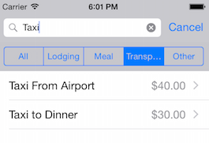

Duration
10 minutes
Goals
The primary goal of this lab is to add some filters into the search bar using the built-in scopes feature.
Required assets
There is a completed solution in the Homework folder. In addition, if you did not complete the prior exercise, you can use the completed solution from that exercise as a starting point here.
Challenge
Here are the high-level steps you will perform, you will be continuing from the prior exercise.
- Supply scope titles to the search bar.
- Update the filtering support to support scopes.
-
Finally, to see the scope button changes independent of the text, implement the
searchBar:selectedScopeButtonIndexDidChange:method and set theWeakDelegateof the search bar so our TableView gets the callback.
Steps
Below are the step-by-step instructions you can use to provide additional details to the above high-level steps.
Optional: Adding support for search scopes
You will add support for a Scope bar in the search to filter our search text to categories we provide.
-
First, when setting up the search controller in
ViewDidLoad, set some scope button titles to theSearchBarproperty. This will activate the scope bar in the UI. Use the same array found in theExpenseDetailViewController.csfile with an "All" option add to the front for a global search: -
To support the scopes, we will need to update our
FilterContentForSearchTextmethod to take astringscope. It should then change theWherecondition to use the scope if it's not set to "All". -
Modify the
UpdateSearchResultsForSearchControllerto lookup the current scope on theSearchBarusing theScopeButtonTitlesproperty (this is the array we set) and theSelectedScopeButtonIndex. Both of these properties are on theSearchBarwhich is a property of the passed searchController parameter. We can then pass the scope into our updated filtering method. - Run the application, notice it now has the scope bar with your text options. You can click on a scope button and start typing text to constrain to the text and selected scope. 
- Try just changing the scope by tapping on a different button - notice that it doesn't change the results. This is because that notification is sent to the search bar delegate and not through the search controller. Let's implement that method so we can catch this final case.
new[] { "All", "Lodging", "Meal", "Transportation", "Other" });
Implement the searchBar:selectedScopeButtonIndexDidChange: protocol method
To catch just scope changes, we need to either implement the UISearchBarDelegate protocol wrapper and assign it to the Search Bar delegate, or we can take the [Export] trick shown in class. Since this second approach is the trickier one, let's use that here and you can try the inner class approach on your own.
-
First, let's identify the proper signature for the method we want. Look up the UISearchBarDelegate documentation from Apple. Make sure you are using the Objective-C definition (there's a switch at the top of the page for the language), and locate the
selectedScopeButtonIndexDidChangemethod. - The page lists the signature as:
-
Based on this, it appears that we need a method that takes a
UISearchBarand anintvalue which is the selected scope button index. - Create a new method named SelectedScopeButtonIndexChanged which takes the two parameters.
-
To expose this method as the protocol method required by Objective-C, decorate it with an
Exportattribute using the full name of the method signature, but omitting the parameter types. Here's the proper export you need: -
In the method body, get the scope title using the
ScopeButtonTitleson the passed search bar, using the passed index. Then pass the search bar text and scope into theFilterContentForSearchTextmethod, just like we do in ourUpdateSearchResultsForSearchControllermethod. -
Finally, to connect this method to our search bar, set the view controller as the delegate by setting the
searchController.SearchBar.WeakDelegateproperty to "this" in theViewDidLoadmethod. - Run the application. Click in the search bar to start searching and choose different scopes to see it immediately filter. You can further constrain the filter by typing in some text.
- (void)searchBar:(UISearchBar *)searchBar selectedScopeButtonIndexDidChange:(NSInteger)selectedScope
[Export ("searchBar:selectedScopeButtonIndexDidChange:")]
Summary
In this exercise, you added some search scopes into your application using the built-in support found in the UISearchController class.